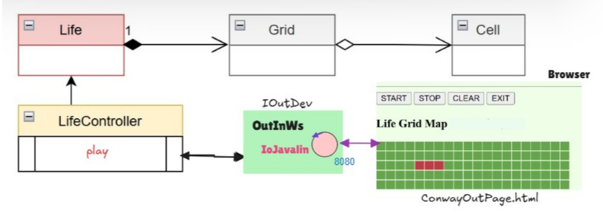

Introduction
Goal: Realizzazione in Java del
GAME OF LIFE DI CONWAY con GUI del gioco realizzata come una pagina Web
Requirements
-
Realizzare una versione in Java del gioco Life di Conway, come gioco zero-player.
Il gioco consiste nell’introdurre una Griglia di Celle il cui stato (cella ‘viva’ o cella ‘morta’) evolve come stabilito dalle regole di ConwayLife.
-
L’utente umano deve poter:
- specificare la configurazione iniziale della griglia del gioco
- vedere l’evoluzione del gioco in forma opportuna (si veda Problema della vista del gioco )
- fermare e far ripartire l’evoluzione del gioco
- pulire (a gioco fermo) la configurazione della griglia del gioco
-
Realizzare una GUI realizata con una pagina Web e con IoJavalin integrato
Requirement analysis
La logica del gioco è già stata analizzata nello Sprint1.
Problem analysis
Analizzo l'architettura del sistema che voglio realizzare:

Test plans
Project
Testing
Deployment
Maintenance
By Arianna Buffoni email: arianna.buffoni@studio.unibo.it,

GIT repo: https://github.com/ariannabuffoni/IngegneriaSistemiSoftware2026.git